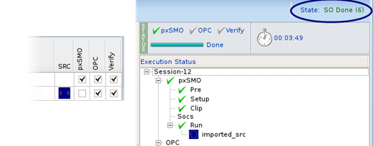

You may want to compare SMO results against
the source used by your process of record. You can use the RET Selection
GUI to more precisely measure the results.
Procedure
- Set up
the sessions to optimize the source, plus one other.
- For the
session that will measure the existing source’s performance, import
the source.
- Click
the Job Status tab. (This is in the Session
Browser window at the bottom of the Result area.)
- The
source file can be imported immediately or when the OPC stage executes.
To
immediately import the source file, right-click the pxSMO line in
the Execution Status tree and select .
To import the
source file at the OPC stage, right-click the pxSMO line in the
Execution Status tree and select . The Queue option
improves the import time for EUV multi-slit sources.
- Navigate
to the source map file, which typically has a file suffix of .src,
and select Open.
The RET Selection GUI appears to be executing the session
while it activates the session and imports the source. After a few
minutes, the Run Control entry is set to run just OPC and Verify,
the Execution Status shows the state as SO Done (6), and the tree
shows green checks for the pxSMO phase.

- Importing
a mask is an optional step.
- To
import a mask, right-click the OPC line in the Execution Status
tree and select Import Mask.
- Navigate
to the layout file, which typically has a file suffix of .oas or
.gds, and select Open.
- The RET Selection GUI appears to be executing
the session while it activates the session and imports the mask.
After a few minutes, the Run Control entry is set to run just Verify,
the Execution Status shows the state as Submitting, and the tree
shows green checks for the OPC phase. To confirm that the correct
mask file was imported, hover over the OPC line and read the file
name in the tooltip.
- Run the
sessions.
- After the
sessions have successfully completed, compare the results using
the Inter-Plots window.
- In
a list of sessions, right-click and select to open the window.
- If the
Layout-Spec Delta Components column is empty, set the Layout Specification.
See “Scoring” for details.